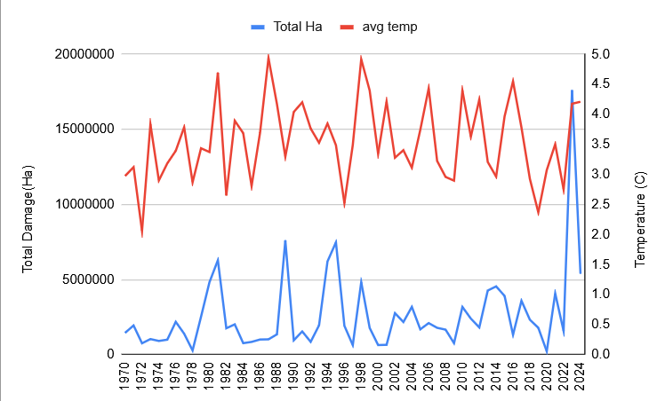
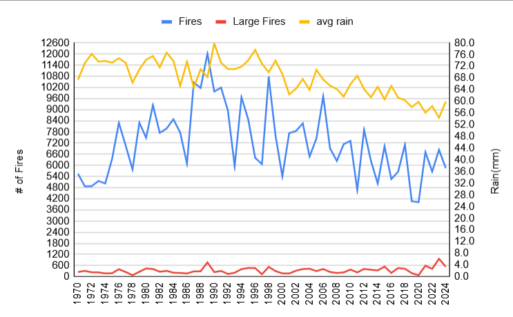
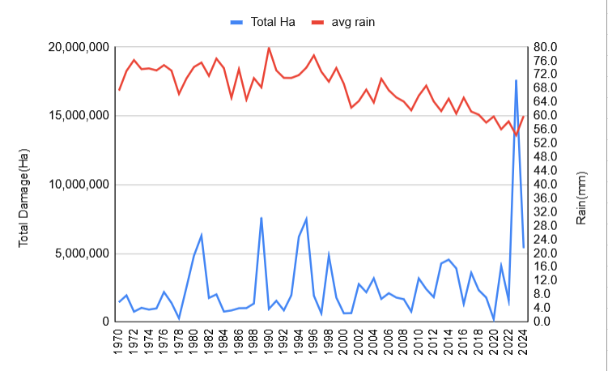

STSO 425 - Final Project Website - Wildfires and climate in Canada
These are the graphs that I made from the data. They show the average temprature and average rainfall compared to the amount of fires and the damage those fires did in a year
Ha is hectares, mm is millimeters, C is degrees celsius



